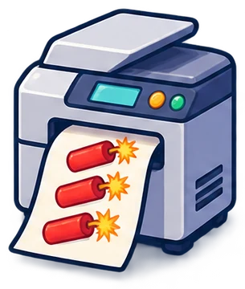
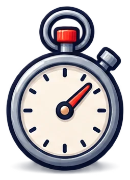
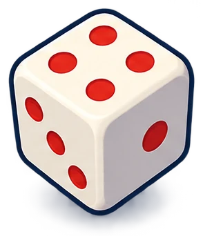
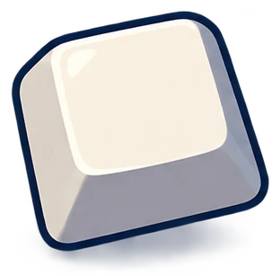
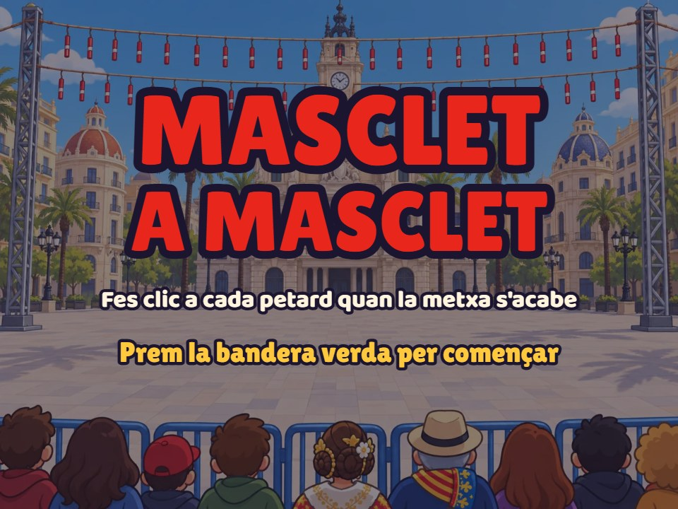
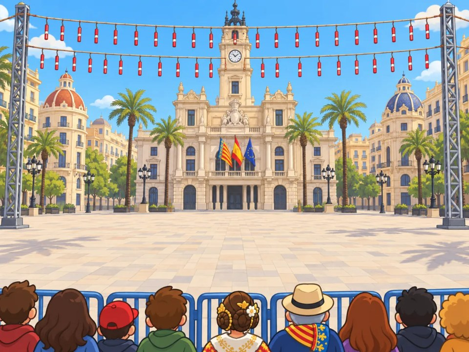
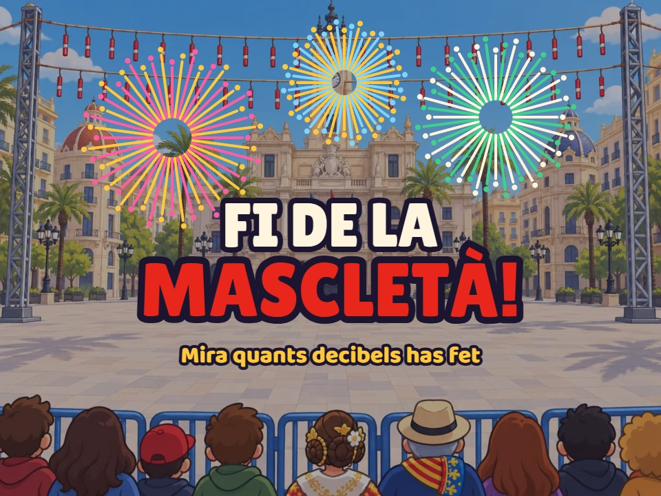
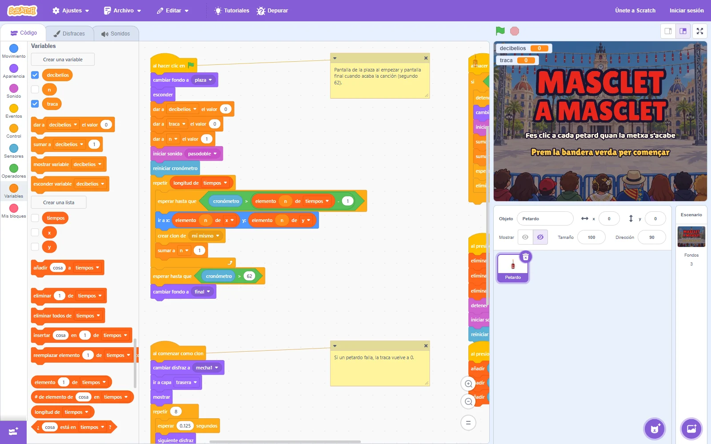

Módulo 4
Scratch paso a paso: la mascletà
Del petardo solo a una mascletà entera: clones, música, cronómetro y un modo para grabar tu propio mapa.
←→ para moverte · B buscar · P pantalla completa
Foto: Maria19731008 · CC BY-SA 4.0 · Wikimedia Commons
Módulo 4
De un petardo a una mascletà
Empezamos donde acabó el módulo 3: un petardo que explota si haces clic a tiempo. Como allí, lo nuevo de cada paso sale con borde verde y al jugar se ilumina el bloque que se está ejecutando. Para tu clase, las fichas para el alumnado 6 a 10.

Muchos petardos
Clones y posición al azar
Con música
El problema de «esperar»
Al ritmo
Cronómetro y lista de tiempos
Modo pirotécnico
Graba tu propia mascletàRemate
Traca, pantallas y finalCómo cuadra con la música
La sincronización, explicadaRepaso del módulo 3
Dónde lo dejamos: la vida de un petardo
 ApareceBandera verde: va al centro y se muestra.
ApareceBandera verde: va al centro y se muestra. Se quema8 disfraces en 1 segundo.
Se quema8 disfraces en 1 segundo. ¿Clic a tiempo?Si el disfraz es mayor que 6…
¿Clic a tiempo?Si el disfraz es mayor que 6… ¡PUM!Suma 100 decibelios.
¡PUM!Suma 100 decibelios. Si no: fsssEl petardo falla.
Si no: fsssEl petardo falla.Ahora queremos muchos petardos, por toda la plaza y al ritmo de la música.
Paso 6
Muchos petardos: clones
Ideas nuevas: el clon y el número al azar.
Qué vas a conseguir
- Que salgan 20 petardos, uno cada segundo.
- Cada uno en un sitio al azar de la plaza.
- Que puedan estar varios en pantalla a la vez.
Paso 6 · Muchos petardos
Un objeto solo puede estar en un sitio
Con un solo objeto solo hay un petardo. Si queremos uno nuevo mientras el anterior aún se quema, necesitamos copias.
Un clon es una copia de un objeto que se crea mientras el programa funciona. Tiene los mismos disfraces y programas, y vive por su cuenta.
Crear clon de mí mismo Control
Hace una copia del objeto, en el sitio donde está.
Al comenzar como clon Control
El programa que hace cada copia al nacer.
Eliminar este clon Control
La copia desaparece del todo.
Paso 6 · Muchos petardos
La fábrica de petardos
El objeto original se esconde y solo fabrica. Cada clon es un petardo de verdad.

Al azar«Número aleatorio entre −180 y 180» Operadores para x; entre −80 y 80 para y. Cada clonHace lo del módulo 3: aparece, quema la mecha, explota o falla.Y desaparece«Eliminar este clon» en lugar de «esconder».
Cada clonHace lo del módulo 3: aparece, quema la mecha, explota o falla.Y desaparece«Eliminar este clon» en lugar de «esconder».Paso 6 · Muchos petardos
Los bloques del paso 6
La fábrica
Cada clon
- El programa del petardo pasa de la bandera a al comenzar como clon Control. En verde, lo que cambia respecto al paso 5.
- Ir a capa trasera Apariencia: el clon nuevo se pone detrás. Así, si dos se tocan, el que va a explotar antes queda delante y recibe el clic.
- Lo descubrimos probando: sin ese bloque, algunos clics «se perdían».
Paso 6 · Muchos petardos
Pruébalo: 20 petardos al azar
La fábrica
Cada clon
El programa del clic es el del paso 5, pero al final elimina el clon. Con la velocidad «Muy lenta» se ve cómo la fábrica crea cada clon y cómo cada uno quema su mecha por su cuenta.
Paso 7
Con música
Ideas nuevas: el pulso de la música y el problema de «esperar».
Qué vas a conseguir
- Que suene el pasodoble.
- Un petardo en cada golpe de la música.
- Descubrir por qué así no acaba de cuadrar.
Paso 7 · Con música
120 golpes por minuto
El pasodoble va a 120 pulsaciones por minuto (en inglés, BPM). 60 segundos ÷ 120 = un golpe cada 0,5 segundos.
Segundos de la canción
Intro1.ª nota: 4 s 4,5 s5 s
4,5 s5 s 5,5 s
5,5 s- La canción tiene 4 segundos de entrada. La dolçaina empieza a los 4 segundos.
- La mecha dura 1 segundo. Para que el primer petardo explote a los 4 s, tiene que aparecer a los 3 s.
Paso 7 · Con música
Pruébalo: un petardo en cada golpe
- Iniciar sonido pasodoble Sonido y esperar 3 segundos Control: la entrada.
- Después, un clon cada 0,5 segundos.
Paso 7 · Con música
El problema: se va retrasando
1. Se retrasa
Cada «esperar» tarda un poco más de lo que pone: Scratch lo comprueba unas 30 veces por segundo. Con 100 esperas, el retraso puede pasar de 1 segundo.
2. No sigue la melodía
Sale un petardo en cada golpe, también donde la dolçaina no toca. La gracia es que exploten con las notas.
Paso 8
Al ritmo: cronómetro y lista
Ideas nuevas: el cronómetro, la lista y el contador.
Qué vas a conseguir
- Que cada petardo explote con una nota de la dolçaina.
- Que no se retrase aunque la canción dure un minuto.
- Guardar los tiempos en una lista.
Paso 8 · Al ritmo
El cronómetro y la lista
Cuenta los segundos desde «reiniciar cronómetro». Si lo reinicias a la vez que empieza la música, los dos van juntos todo el rato.

Una lista es una variable que guarda muchos valores en orden. La lista tiempos tiene el segundo en que explota cada petardo.
Se crea en Variables › Crear una lista. El .sb3 ya trae la lista llena: 99 tiempos, uno por cada nota de la dolçaina que cae en un golpe.
| n | tiempos | Qué pasa |
|---|---|---|
| 1 | 4.02 | Aparece a los 3,02 s y explota a los 4,02 s |
| 2 | 4.52 | Medio segundo después |
| 3 | 5.02 | … |
| 4 | 5.52 | |
| 5 | 6.02 | |
| 6 | 7.02 | Aquí hay 1 segundo de hueco: la melodía para |
| … | … | Hasta el 99 |
Paso 8 · Al ritmo
Los bloques del paso 8
- n Variables es un contador: el número del petardo que toca. Empieza en 1.
- Iniciar sonido Sonido y reiniciar cronómetro Sensores, uno detrás de otro: la música y el cronómetro empiezan juntos.
- Repetir (longitud de tiempos) Control: una vuelta por cada petardo de la lista.
- Esperar hasta que cronómetro > tiempo − 1 Control: 1 segundo antes de su nota, se crea el clon.
- Sumar a n 1 Variables: pasa al siguiente.
Paso 8 · Al ritmo
Pruébalo: ahora sí, con la melodía
Paso 9
Modo pirotécnico: graba tu mascletà
Ideas nuevas: eventos de teclado, posición del ratón y añadir a una lista.
Qué vas a conseguir
- Que cada petardo salga en su sitio (listas x e y).
- Grabar una mascletà nueva tocando al ritmo.
- Que cada alumno pueda hacer su propio nivel.
Paso 9 · Modo pirotécnico
Grabar tu propia mascletà
El pirotécnico decide dónde y cuándo explota cada masclet. Aquí lo decide el alumnado, al ritmo de la música.

Tecla GBorra el mapa y empieza la canción.RatónPonlo donde quieras el petardo.Se guardaEl segundo en «tiempos»; el sitio en «x» e «y».Bandera verdeA jugar tu mascletà.Paso 9 · Modo pirotécnico
Los bloques del modo pirotécnico
Tecla G: grabar Eventos
Espacio: un petardo Eventos
Las listas, en Variables; el cronómetro y el ratón, en Sensores. Y en la bandera verde, la posición sale de las listas:
go to x: (item (n :: variables) of [x v]) y: (item (n :: variables) of [y v])
Paso 9 · Modo pirotécnico
Pruébalo: graba y juega
- Pulsa Probar: se juega la mascletà que trae el proyecto.
- Pulsa Parar. Con el juego marcado en amarillo, pulsa G.
- Mueve el ratón por la plaza y pulsa Espacio en cada nota.
- Cuando acabe la canción, pulsa Empezar y juega tu mascletà.
Paso 10
Remate: traca, pantallas y final
Ideas nuevas: fondos del escenario y una variable que se reinicia.
Qué vas a conseguir
- Una pantalla de inicio y otra de final.
- La traca: cuántos aciertos seguidos llevas.
- El juego completo, listo para publicar.
Paso 10 · Remate
Pantallas de inicio y final



- El escenario tiene 3 fondos: inicio, plaza y final. Al abrir el proyecto se ve el de inicio.
- Al pulsar la bandera: cambiar fondo a plaza Apariencia.
- Cuando el cronómetro pasa de 62 segundos (ha acabado la canción): cambiar fondo a final.
Paso 10 · Remate
La traca: aciertos seguidos
Una traca es una fila de petardos que explotan uno detrás de otro. En el juego, cuenta los aciertos sin fallar.
Clic: suma 1
Fallo: vuelve a 0
- Sumar a traca 1 Variables en cada PUM.
- Dar a traca el valor 0 Variables cuando un petardo falla.
- Al empezar la partida también vale 0.
Paso 10 · Remate
El juego completo
| En el proyecto | Cuántos |
|---|---|
| Objetos | 1: el Petardo |
| Disfraces | 11 |
| Fondos | 3 |
| Sonidos | 3: pasodoble, pum y fsss |
| Variables | 3: decibelios, traca y n |
| Listas | 3: tiempos, x e y |
| Programas | 5 |
Paso 10 · Remate
Así queda en Scratch

Cada programa lleva una nota amarilla que explica lo que hace.
Si los programas se amontonan, clic derecho en el área de programas › Ordenar bloques.
Para curiosos
Cómo cuadra con la música
La música y la lista de tiempos salen de la misma partitura. Por eso coinciden.
2. MúsicaCon esas notas se genera el pasodoble (MP3).3. ListaCada nota que cae en un golpe es un tiempo: golpe × 0,5 s.Con otra canción
Si conoces sus BPM: tiempo = número de golpe × 60 ÷ BPM, más el segundo en que empieza. O grabas los tiempos con el modo pirotécnico.
Si notas desfase
El sonido puede llegar algo tarde (sobre todo con auriculares Bluetooth). Usa altavoces o suma un poco a cada tiempo.
Resumen del módulo 4
Lo que has añadido
Clones
Un objeto que fabrica copias. Cada copia es un petardo.
Azar
«Número aleatorio» para repartir petardos.
Pulso
120 BPM: un golpe cada 0,5 s.
Cronómetro
«Esperar hasta que» no se retrasa.
Listas
tiempos, x e y: el mapa de la mascletà.
Teclado y ratón
Para grabar tu propia mascletà.
Fin del módulo 4
Ya tienes la mascletà
En el módulo 5 verás cómo llevarlo al aula, cómo hacerlo vuestro y cómo presentarlo a Up! Steam.